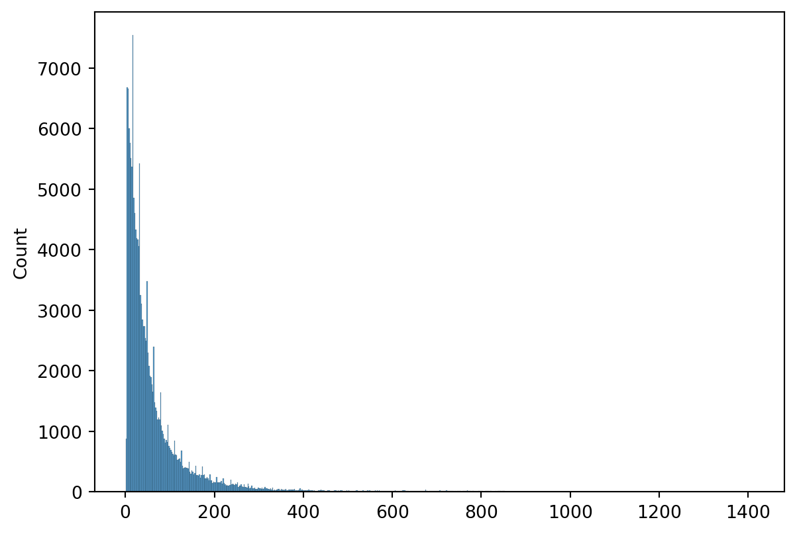

from tensorflow import keras
import pandas as pd
import seaborn as sns
import numpy as npPooling
Nesse exemplo vamos usar as camadas de TextVectorization do exemplo 09 e a camada de embedding do exemplo anterior para transformar cada palavra em um vetor com 1 elemento.
Em seguida vamos considerar que cada texto (no caso do banco de dados, comentários feiros em forum da internet) pode ser representado pela média das palavras que têm nele. Usar a média é também chamado de GlobalAveragePooling no Keras:
Vamos carregar o banco de dados:
dataset = pd.read_csv(
"https://storage.googleapis.com/deep-learning-com-r/toxic-comments.csv"
)
dataset.head()| id | comment_text | toxic | severe_toxic | obscene | threat | insult | identity_hate | |
|---|---|---|---|---|---|---|---|---|
| 0 | 0000997932d777bf | Explanation\nWhy the edits made under my usern... | 0 | 0 | 0 | 0 | 0 | 0 |
| 1 | 000103f0d9cfb60f | D'aww! He matches this background colour I'm s... | 0 | 0 | 0 | 0 | 0 | 0 |
| 2 | 000113f07ec002fd | Hey man, I'm really not trying to edit war. It... | 0 | 0 | 0 | 0 | 0 | 0 |
| 3 | 0001b41b1c6bb37e | "\nMore\nI can't make any real suggestions on ... | 0 | 0 | 0 | 0 | 0 | 0 |
| 4 | 0001d958c54c6e35 | You, sir, are my hero. Any chance you remember... | 0 | 0 | 0 | 0 | 0 | 0 |
Nosso objetivo será, a partir do texto do comentário, classificar em tóxico ou não tóxico.
x = dataset['comment_text'].to_numpy()
y = dataset.iloc[:,2].to_numpy()Para escolher o valor de output_sequence_length, isto é, o número máximo de palavras em cada texto, fazemos um histograma do número de palavras por texto:
numero_palavras = [len(i.split()) for i in x]
sns.histplot(numero_palavras)<AxesSubplot:ylabel='Count'>
Como a maioria dos textos possui menos do que 150 palavras, escolhemos que o tamanho máximo é 150. Dessa forma, se um texto for muito grande, usamos apenas as primeiras 150 palavras para classificar em tóxico/não tóxico. Isso vai permitir que o modelo fique muito mais rápido.
Vamos então criar a camada de vetorização e adaptá-la:
vectorize = keras.layers.TextVectorization(
max_tokens=10000, output_mode="int", output_sequence_length=150
)
vectorize.adapt(x)
vocab = vectorize.get_vocabulary()Agora vamos definir o modelo. Lembre que cada palavra será representada por um vetor pela camada de embedding e queremos que a média desses valores represente a probabilidade do texto ser tóxicou ou não.
input = keras.layers.Input(shape=(), dtype="string")
output = vectorize(input)
output = keras.layers.Embedding(input_dim=len(vocab), output_dim=1)(output)
output = keras.layers.GlobalAveragePooling1D()(output)
output = keras.layers.Activation("sigmoid")(output)
model = keras.Model(inputs=input, outputs=output)
model.summary()Model: "model_1"_________________________________________________________________ Layer (type) Output Shape Param # ================================================================= input_2 (InputLayer) [(None,)] 0 text_vectorization_1 (TextV (None, 150) 0 ectorization) embedding_1 (Embedding) (None, 150, 1) 10000 global_average_pooling1d_1 (None, 1) 0 (GlobalAveragePooling1D) activation_1 (Activation) (None, 1) 0 =================================================================Total params: 10,000Trainable params: 10,000Non-trainable params: 0_________________________________________________________________Nesse modelo, o número de parâmetros é igual ao número de palavras que temos no vocabulário.
Agora podemos compilar o modelo. Vamos usar a ‘binary_crossentropy’ pois o problema é de classificação binária. Além da acurácia, vamos medir o AUC, uma vez que o problema é bem desbalanceado (muitos zeros e poucos uns).
auc = keras.metrics.AUC(curve="ROC")
model.compile(loss="binary_crossentropy", optimizer="adam", metrics=["accuracy", auc])Agora vamos ajustar o modelo:
model.fit(x, y, epochs=5, batch_size=32, validation_split=0.2, verbose=2)Epoch 1/53990/3990 - 6s - loss: 0.4087 - accuracy: 0.9041 - auc_1: 0.5017 - val_loss: 0.3155 - val_accuracy: 0.9051 - val_auc_1: 0.5966 - 6s/epoch - 1ms/stepEpoch 2/53990/3990 - 5s - loss: 0.3060 - accuracy: 0.9044 - auc_1: 0.7704 - val_loss: 0.2966 - val_accuracy: 0.9053 - val_auc_1: 0.8276 - 5s/epoch - 1ms/stepEpoch 3/53990/3990 - 6s - loss: 0.2939 - accuracy: 0.9045 - auc_1: 0.8131 - val_loss: 0.2884 - val_accuracy: 0.9055 - val_auc_1: 0.8167 - 6s/epoch - 1ms/stepEpoch 4/53990/3990 - 6s - loss: 0.2871 - accuracy: 0.9047 - auc_1: 0.8222 - val_loss: 0.2826 - val_accuracy: 0.9057 - val_auc_1: 0.8313 - 6s/epoch - 2ms/stepEpoch 5/53990/3990 - 7s - loss: 0.2816 - accuracy: 0.9049 - auc_1: 0.8385 - val_loss: 0.2776 - val_accuracy: 0.9058 - val_auc_1: 0.8462 - 7s/epoch - 2ms/step<keras.callbacks.History at 0x7f9c47499e50>Podemos indetificar as palavras com os maiores e menores valores de embedding. Como o texto é classificado em tóxico/não tóxico com base na média dos valores das palavras dele, palavras com valores altos ajudam a classificar o texto como tóxico e palavras com valores baixos ajudam a considerar o texto como não tóxico.
embeddings = model.get_weights()[1]
words = pd.DataFrame.from_dict({
"word": vocab,
"embedding": embeddings[:,0]
})As 10 palavras com maires valores de embeddings são:
words.sort_values("embedding", ascending = False).head(10)| word | embedding | |
|---|---|---|
| 382 | fucking | 8.187375 |
| 139 | fuck | 7.190009 |
| 563 | stupid | 6.245700 |
| 318 | shit | 5.337469 |
| 1190 | idiot | 5.320159 |
| 762 | bitch | 5.001073 |
| 741 | hell | 4.981386 |
| 224 | off | 4.903869 |
| 7 | you | 4.426858 |
| 306 | life | 4.257237 |
E as 10 palavras com menores valores são:
words.sort_values("embedding", ascending = True).head(10)| word | embedding | |
|---|---|---|
| 24 | article | -9.915396 |
| 124 | thank | -9.775599 |
| 46 | please | -9.449037 |
| 2 | the | -9.399350 |
| 86 | may | -8.358996 |
| 13 | for | -8.049402 |
| 18 | as | -7.831261 |
| 191 | welcome | -7.755289 |
| 94 | thanks | -7.719523 |
| 17 | be | -7.713208 |
Vemos que os embeddings que são comportaram como imaginávamos. Maiores valores indicam palavras que levam à textos tóxicos e valores menores levam a textos não tóxicos.